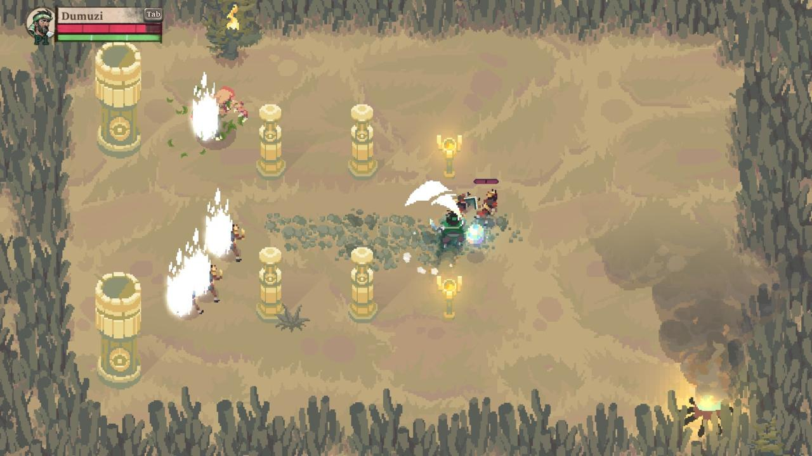
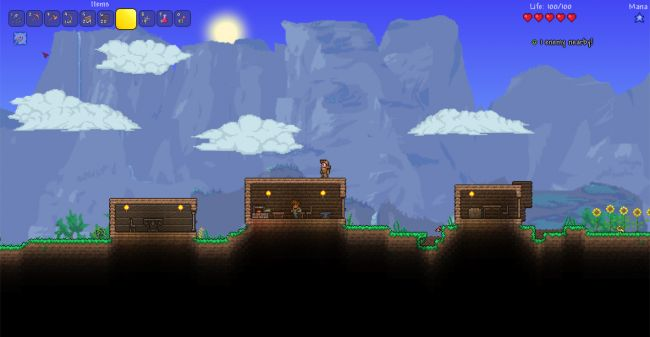
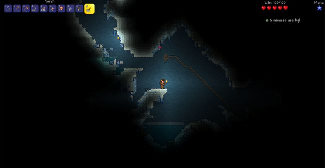
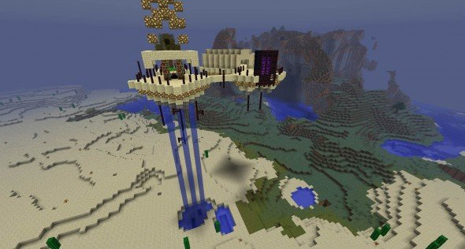
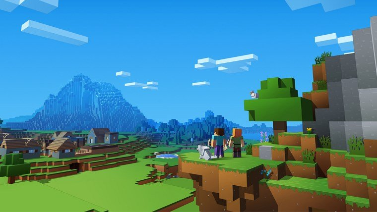
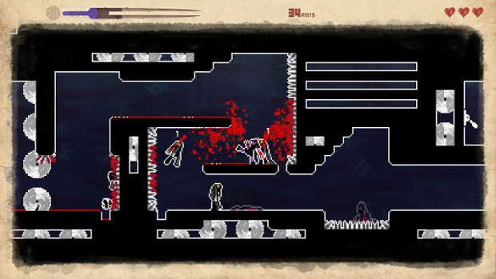
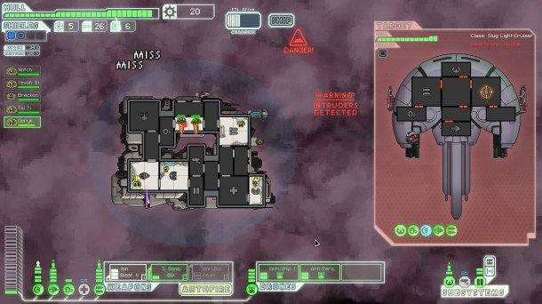

Game Reviews
On this page you'll find the pixel games we've reviewed.
Click on the title of a game to the left to open a review.
- Video by: Gamewalker
- The list was voted on by the facebook group Pixel Art (15.000 members)

On this page you'll find the pixel games we've reviewed.
Click on the title of a game to the left to open a review.
| Pros | Cons |
|---|---|
| Great Soundtrack | Repetative |
| Rich lore | Movement resticted |
| Replayability | Hard to explore the full game due to RNG |
| Co-op with up to 4 players | Certain characters are very lackluster |
It's easier to weave a good tale when given an abundance of time and space to flesh it out. The narrower your constraints, the harder it is to successfully tell a story, and the more glaring every single seam and flaw will be. In that sense the deck is stacked against Moon Hunters from the start; it has a lot of ambition in terms of the story it wants to tell, but with so little space to tell it, the game’s weaknesses become difficult to overlook.
Billed as a “myth-weaving RPG," it can be a little tricky to wrap your head around what Moon Hunters actually is. Most of your time will be spent hopping from point to point on the world map, clearing areas of enemies and encountering random events on your quest to foil the Sun Cult and return the absent Moon goddess to the sky. You’ll do this again and again, playthrough after playthrough, until you figure out what you need for a better ending and, perhaps, get lucky enough to pull it off.
Each playable character has two distinct attacks and one evasive ability, with the exception of the unlockable Songstress who weaves together musical combos instead. Skill upgrades can be purchased through merchants scattered generously around the world, and at the end of each in-game day characters can pick an action to complete at camp that will give the party a stat boost. Occasionally you interact with random NPCs and complete minor events, and the choices made during those encounters will affect your personality. That in turn affects how that character is remembered within the greater context of the game's mythology, which is represented through epilogues and unlockable constellations.
Playthroughs are short, events are randomized, and there's a good chance that many of the possible story beats encountered during your first couple runs won't make a lot of sense (or be particularly useful) until you've done a couple more. If you don't happen to meet a girl who mentions a cat that can teach people to talk to animals, then when you find a shady-looking cat hanging out somewhere you may have no idea that it has any function beyond that of any other animal. It’s seemingly one more loose puzzle piece in a random pile of loose puzzle pieces.
Moon Hunters doesn't give you the time to truly nestle into its world in one sitting, relying instead on the idea that they’ll keep coming back to uncover more and more with each successive playthrough. I wish I could say that at some point it all started to come together for me, but it didn't. It never felt like I was getting enough out of those playthroughs to make them truly worthwhile. I was searching for more, I wanted more, but even overlooking its technical flaws, Moon Hunters couldn't meet me halfway.
| Pros | Cons |
|---|---|
| Sandbox | Intimidating at first |
| Suprising Depth | Unforgiving gameplay |
| Free content updates | |
| Randomly generated world ensured replayability |
I was deep underground, far from home, looting one of the many abandoned homesteads left to be discovered in Terraria's ever-generous bounty of nooks, crannies, alcoves, and recesses. To my left I found a twisted bit of minecart rail, populated exclusively by a nest of extremely territorial face-eating bugs that seemed eager to prove that my loose assemblage of iron-hewed armaments weren't cutting the mustard anymore. Whatever. This cabin seemed safe. Sure it was covered in musty spiderwebs, and broken furniture, but there was a golden chest on the top floor and a loom I was excited to take back to my modest township on the bottom. What could possibly go wrong?
As it turns out, nothing was going to go wrong. There wasn't a scripted boss encounter or an interrupting dirge of story exposition lying in wait for any adventurer who breached the walls. That'd be extremely un-Terraria. However, I managed to find something even scarier. if you're an idiot like me, you might not notice the underground reservoir of water above the roof until you inadvertently jam your pickaxe through the last brick keeping it at bay.
The building flooded in seconds, dowsing all of my torches, leaving me in total darkness. I took a few moments to admire the truly unique mess I'd made of everything before pulling out a glowstick (which stay lit underwater), swimming to the foyer, and flinging open the door, which sent the water rushing outwards and away from me. It was a completely improvised solution, in the face of a completely dynamic problem—eclectic dungeoneering, powered solely by the infinite potential of a player's arsenal. That is the essence of Terraria.
There was a time, back in the already-difficult-to-remember 2011, when Terraria released to Steam and was immediately dogged by comparisons to Minecraft. And it is similar, if 2D. These are two games about digging and building and crafting, supported by a ravenous community willing to pour hundreds of hours into exactly one universe for the rest of their lives. But things have changed since then. Notch sold off Minecraft to buy a house in Calabasas, and today his work is played primarily by nine-year-olds and YouTubers who make videos for nine-year-olds. Terraria, on the other hand, attracts very particular fans, and today it feels like the world at large has determined this little 2D side-scroller is a modern classic.
Terraria's core structure remains pretty much the same as it was during its initial unveiling. You create a character, and enter a randomly-generated world (albeit one that's guaranteed to have a few core recurring elements). There's a day/night cycle, which means you'll immediately be under siege by zombies and floating eyeballs as soon as the sun goes down, so your first order of business is to put your starting set of copper harvesting tools to work and construct a house (complete with a table, chair, and light source). Once you have a place to keep you safe at night, the world is pretty much your oyster. You trot across the earth's crust to find some entry points into the vast network of underground caverns below your feet. You'll mine, and chop, and kill enterprising bad guys, and return home with iron, and tin, and buckets of loot sourced from benevolent wooden chests. You'll construct layered workstations to forge your harvest into better weapons and gear, you'll build more houses that will attract new NPCs, who will sell you exotic items or offer fresh haircuts, you'll eventually no longer fear the night, and will cut through zombies like cotton candy.
Terraria looks a little intimidating from the outside. That's an affliction we all deal with when we examine a legacy product, under a watchful stream of patches and updates, with an international fanbase so deeply ingrained in their own culture that they might as well be speaking a different language. Undoubtedly, you'll do some googling and be confronted with ersatz terms like Hardmode and corruption, and Insane Cultists, and crystal hearts. It is those overwhelming moments where we all want to regress back into our happy place—the games where we've already put in the work to know what we're doing.
What I will say is that Terraria can truly be whatever you make of it. You can download a checklist that will fast-track you through all the optimal crafting paths or boss strategies. Or you can simply get lost in the transcendental meditation of digging, and finding cool stuff, and doing more digging. Kill the brain of C'Thulu with a revolver, or find a nice bookcase and proudly mount it on the second floor of your apartment. Whatever it is, Terraria will find you.
| Pros | Cons |
|---|---|
| Unlimited possibilities | Updates are slow and small |
| Replayable | |
| Great modding community | |
| Play LAN, alone or on a server with as many people as you'd like! |
Minecraft, as if you've never heard of it, as if we haven't been telling you to play it for years, as if we didn't already give it Game of the Year in 2010, is a game about building things out of blocks with your friends. The game world is rendered in cubes, every one of which can be destroyed, stored in your inventory, and placed back down anywhere you like. The map generates more terrain as you explore in a new direction, almost infinitely (you will run out of hard disk space at some point). That terrain is a quilt of discrete environmental regions, or biomes: as you travel, the thick forest you spawned in will give way to veldt or cliffs, or a desert peppered with cacti. You might reach the ocean, or a marsh clogged with exploding monsters and lily pads, or an ice floe leading to a wintry island. Such random features as rivers, caves, waterfalls and ravines thread this world. Herds of friendly, blocky animals graze happily here and there: pigs, sheep, cows and chickens all provide useful products when slaughtered, and they can even be kept and bred.
When the square sun sets, however, you need to worry. Whenever a given tile is dark, a monster can spawn on it, and at night, there are hundreds of them. They're a varied bunch. Spiders are low and wide, can climb vertical surfaces, and tend to jump right in your face while hissing. Zombies are slow melee oppressors, walking in a straight line towards you and able to hop over short, one-block-high obstacles. Skeletons prefer to circle you and fire arrows. Endermen are tall, teleporting nasties who only get angry when you look at them. They're scattered infrequently throughout the night, and each requires careful attention to dispatch when you're unarmed.
Creepers are the iconic, green, cactus-like Minecraft enemies that populate fan art all over the internet. They have four stubby legs at the base of their long, phallic bodies. They like to scuttle deftly towards you, hiss, inflate alarmingly, then explode. The explosion deals significant damage, tearing a great chunk out of the ground and any surrounding masonry. It doesn't happen often, but when it does, the impulse to rebuild – or perhaps improve – is invigorating.
Crafting caters to that impulse. Crafting enables you to make new and upgraded equipment. Once you've fashioned yourself a sword and some armour, stabbing skeletons is a great way to while away the moonlight. With a punchy iron sword, if you slice while falling through the air to score a critical hit, there aren't many foes that won't drop in a few swings. Until then, you can keep a few zombies at bay for a while, but all the teleporting and climbing and shooting and exploding will get you one way or another. Better to keep moving.
But it's not just a fun old game with lots of hours-divided-by-money-equals- value. It's an exciting and important direction for games to be walking in. Look, no tits! No guns! Parents can buy it for children, and leave them playing it safely! Women won't run into horrid stereotypes of themselves wearing armoured thongs! Teachers can teach it in schools! Deus Ex, up at a score of 95, made me think: “What if more shooters were like this?” Minecraft locks me in hour-long paralysis as ideas course through me. If Doom spawned the FPS industry, what the hell will the fruit of Minecraft's cubic womb be? Has the future of PC gaming ever looked so good, before we saw it from the top of this big blocky mountain?
I showed the game to my nineyear- old cousin and her six-year-old sister, and there was a period of stunned silence, followed by a din of suggestions and pleas and queries. My parents get it. My grandparents get it. People burnt out on WoW get it, people tired of shooting men get it. Almost everyone gets it. And you should get it too.
| Minecraft | By Mojang |
|---|---|
| Rating: | ★★★★★ |
| Genre: | Openworld Sandbox |
| Players: | Single and Multi |
| Price: | €20,- |
| Platform: | PC, Mac, Mobile, PS4, Xbone & Switch |
| Pros | Cons |
|---|---|
| Classic Sidescroller | Very difficult to master |
| Many levels to explore | Certain levels very unbalanced |
| Nostalgic soundtrack | Repetative gameplay |
| Again.. very difficult due to inbalance |
At the Lafcadio Academy for Troubled Young Ladies, a nameless girl discovers a strange, bleeding tome in the library. An otherworldly power from within the book causes her to have macabre dreams in which her skin turns purple and her hands become long, bloody claws. Though she doesn't mind the dreams at first, she quickly becomes distraught as her body starts undergoing the same transformation in the real world. But no matter how many times she tries to discard or destroy the book, it keeps finding its way back into her room, infesting her slumber with ever more disturbing visions.
Some folks may compare They Bleed Pixels to other recent, brutally hard platformers such as Super Meat Boy, but I find it has more in common with Battletoads on the NES. In addition to high-tension running, jumping, and dodging, both titles have combat systems that wouldn't be uncommon in your typical brawler. And like how Battletoads baddies meet their end by one of the game's iconic finishers, enemies in They Bleed Pixels are similarly dispatched in style, capped by a satisfying splatter of pixelated plasma.
Taking a page out of Super Smash Bros., you have access to a bevy of techniques via context-sensitive, single-button commands. Depending on which direction button you are holding or whether you're airborne, pressing the attack button will execute a jab, kick, air juggle, dive, dash, or one of a number of other abilities. You can also use the environment to your advantage by launching foes into walls of spikes or spinning buzzsaws, adding to your combo chain.
You can't button-mash your way to victory, as most enemies are able to defend against blind attacks. You'll spend the first few levels getting a feel for how to best approach each foe, then you'll start facing multiple varieties at once, putting your skills to the test. It's a shame that there are but a handful of enemy types in the entire game, but at least they manage to remain just as deadly from start to finish rather than becoming less threatening as you hone your skills.
With They Bleed Pixels, Spooky Squid Games tried to cleverly blend hard-as-nails platforming with beat-em-up mechanics. Though the end result is not the perfectly balanced fusion the team was aiming for, it's still an intense adventure for anyone who doesn't mind repeated death and dismemberment.
| Pros | Cons |
|---|---|
| Great Soundtrack | Combat is easily mastered |
| Many vehicles to unlock | RNG heavy |
| Difficult trading choices | |
| Level up your crew and upgrade the ship |
Every one of FTL's evening-sized odysseys bulges at the bulkheads with dramatic dogfights, tough trading decisions and bittersweet twists of fate. If you've ever yearned for a randomness-heavy 2D Firefly game – a top-down Star Trek or Blake's Seven turn-based strategy game – then yearn no longer.
Adventures begin with ship selection. Initially there's just one vessel type available. Completing enigmatic quests widens the choice on subsequent playthroughs.
Whatever craft you're captaining, the ultimate objective is always the same: deliver a vitally important message to the Federation fleet by battling, trading, and upgrading your way through a randomly generated web of sectors. Every sector is its own navigable web of unscripted surprises.
There are hundreds of possible encounters, and countless ways of improving your ship. Bad luck and poor decisions regularly lead to heartbreaking setbacks and sacrifices. So far I've refused to hand over any crew to bullying slavers, but have on several occasions had to sell indispensable kit in order to finance essential repairs or fill an empty tank. Running out of fuel is one of the game's scariest situations. You're forced to drift forlorn and regret-wracked waiting for either a good Samaritan or a rebel coup-de-grace.
FTL feels like a project that's been thoughtfully tweaked over several years. Features work hard and are well meshed. Texts are trim and nicely phrased. Even Ben Prunty's twinkling soundtrack fits beautifully. Scanning the game's impressive superstructure for vulnerable exhaust ports and shot traps, just about the only weakpoints I've managed to identify are the lack of personnel histories, and the painfully slow rate of vessel unlocks. A few lines illuminating the backgrounds of new crewmen, and some more generous blueprint dispensing would nudge this unmissable sci-fi story generator even closer to perfection.